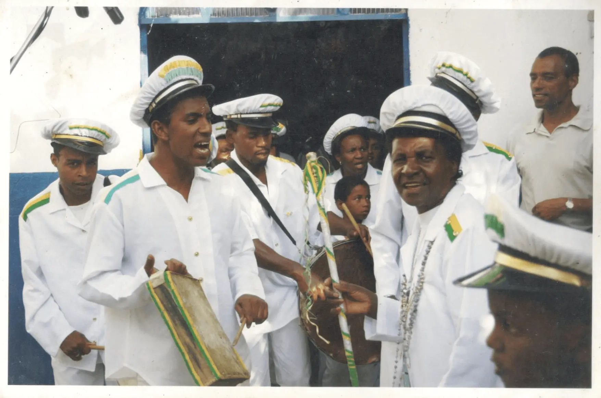
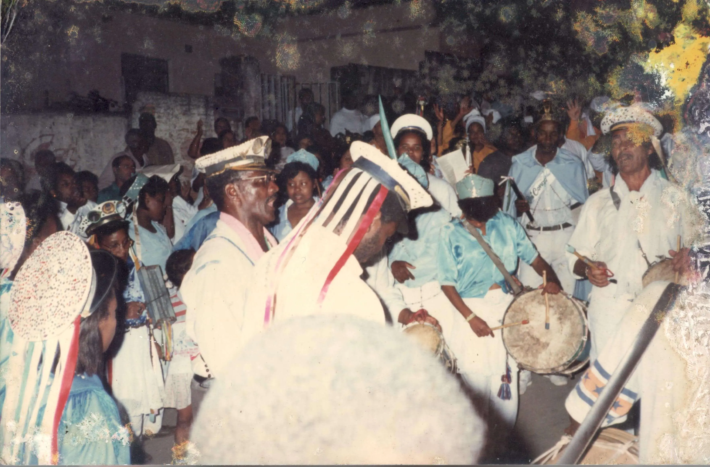
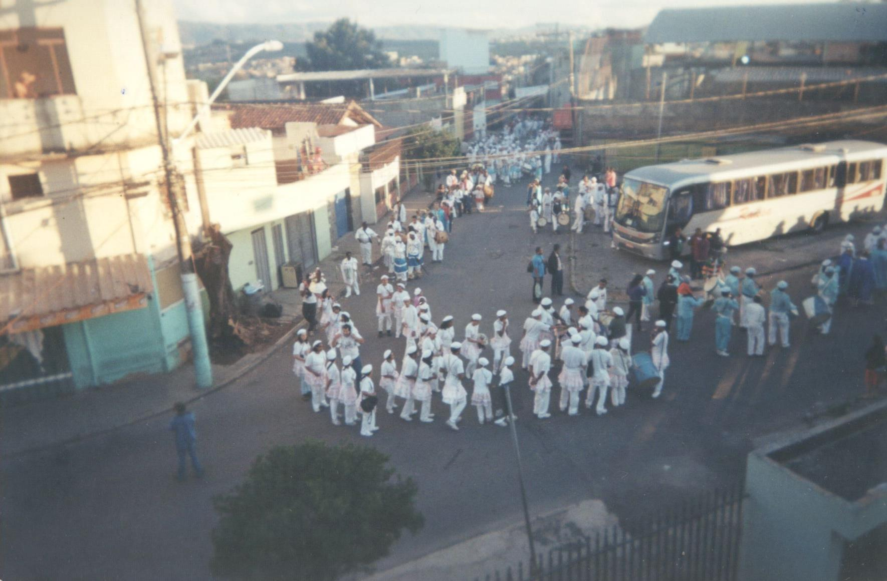
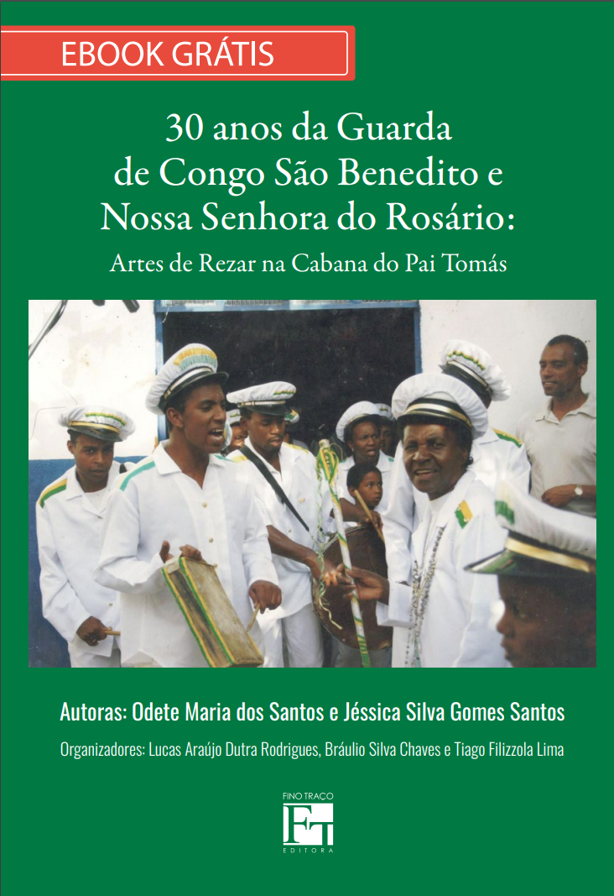

GUARDA DE CONGO SÃO BENEDITO E
NOSSA SENHORA DO ROSÁRIO

HISTÓRIA DA GUARDA
PELA PALAVRAS DA CAPITÃ-MOR E FUNDADORA DONA ODETE
Trechos retirados do livro 30 anos da Guarda de Congo São Benedito e Nossa Senhora do Rosário: Artes de Rezar na Cabana do Pai Tomás
“Na época que eu vim pra cá, eu não me lembro de ter Congado aqui, não me lembro. Então, quem fundou o Congado aqui, a primeira vez, foi o Zé Francisco. Como que foi a fundação desse Congado? Ele fazia muita festa junina, sabe? Era festa mesmo, junina, pra gente participar. 'Nó', era bom demais. Entendeu? A gente fantasiava de não sei mais o quê (risos).”

“Nossa, mas era bom demais. Nós dançava quadrilha, tinha, sabe? Quadrilha, tinha muita coisa. Tinha um baile na casa dele toda segunda-feira. Eu, quando trabalhava, aí, então, o povo já sabia, depois do trabalho ia pro Seu Zé, porque tinha baile. E aí um dia na festa junina, terminou, nós tava limpando o terreiro, né? Aí nós falou assim ‘engraçado, né, num tem nenhum Congado aqui, que tal, vamo tentar fazer um Congado?’”

“Então, é... e foi muito bom, nós viajou muito, viajava demais, sabe? E, então, eu dancei lá 16 anos.”
“E hoje eu tô deixando esse recado: a partir de hoje eu não faço parte mais da Guarda. Não danço em qualquer outro Congado, se eu não entrar em outras, eu faço a minha. Mas nunca deixo o meu rosário, meu rosário eu vou levar até o dia da minha morte. Esse eu não vou lamentar nunca. Porque eu não coloquei uma pessoa pra aparecer, eu coloquei pra somar mais um.”
“É aí que eu fui resolver formar minha Guarda. O meu pai estava adoentado, numa situação mais crítica e estava ficando em casa. E ele pediu a mim e Lalado que, se ele melhorasse, tudo tranquilo, a gente ia festejar três dias na festa de Bom Jesus. Agora, se visse que não dava, nas palavras dele, que ele iria festejar lá no céu e que eu ia festejar aqui na Terra. Que se ele fosse, que queria ir pra festejar no dia dele, e aceitei o pedido dele. Porque ele faleceu no dia 10 de outubro, bem no dia da Festa do Rosário. E eu continuei com o meu legado, mas formei a guarda depois de três anos após a morte do meu pai e assim continuei. Os irmãos, eu tenho 14 irmãos, mas só três famílias é que ainda seguem esse rosário.”
“Até hoje, em todos os lugar que eu apresento eu falo 'A minha Guarda é filha da Guarda do Seu José' porque foi de lá que eu comecei. Porque na época do meu pai a gente acompanhava, mas não fazia parte, assim, né? Então eu nunca neguei. A minha Guarda é filha da Guarda dele.”
DOCUMENTÁRIO: 30 ANOS DA GUARDA DE CONGO SÃO BENEDITO E NOSSA SENHORA DO ROSÁRIO
No documentário, que aborda a história dos 30 anos da Guarda de Congo São Benedito Nossa Senhora do Rosário da Cabana do Pai Tomás, Dona Odete, capitã-mor da Guarda, conta sobre o surgimento da Guarda, suas imbricações na formação do território do Cabana do Pai Tomás e um pouquinho de sua vida, em uma conversa cheia de sabedoria e emoções.

LIVRO “30 ANOS DA GUARDA DE CONGO E SÃO BENEDITO E NOSSA SENHORA DO ROSÁRIO”
CLIQUE PARA BAIXAR